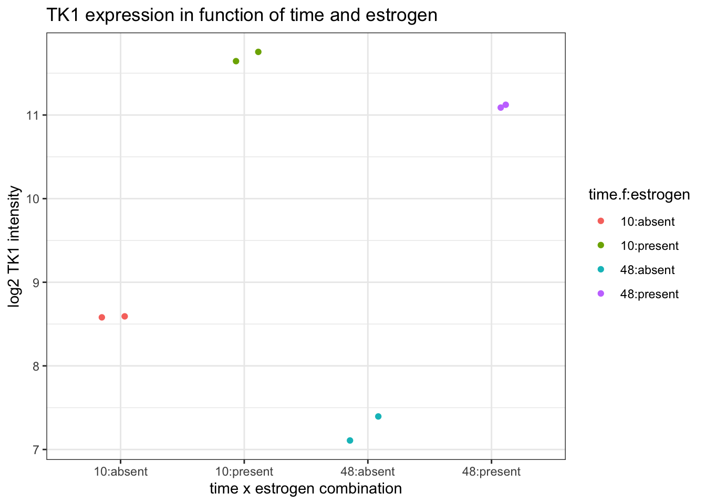
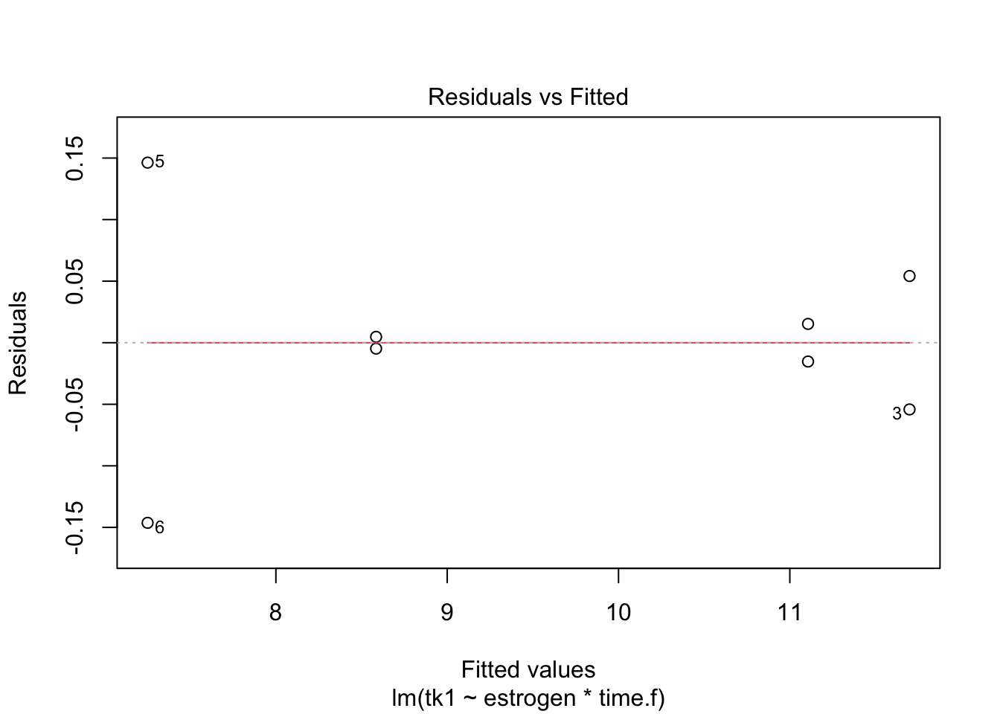
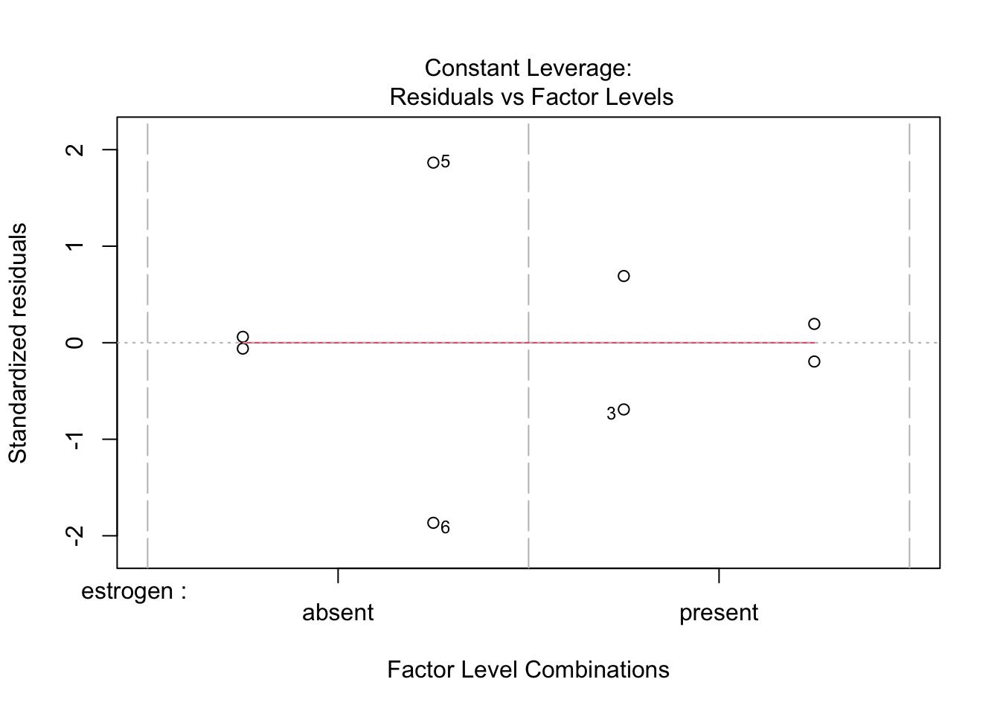
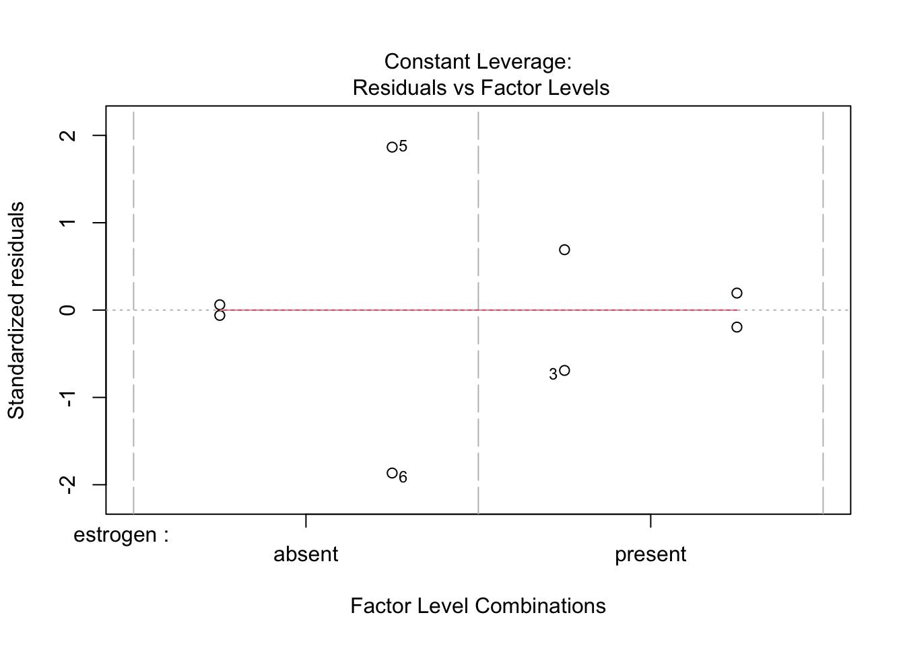

Exercise 8.x: Blocking on the estrogen dataset - solution
Lieven Clement and Jeroen Gilis
statOmics, Ghent University (https://statomics.github.io)
1 Background
A 2x2 factorial experiment on cancer cell cultures is performed. Two factors were considered in this experiment: estrogen (present or absent) and length of exposure (10 or 48 hours). The study aims to discriminate between early and late response. The researchers assessed gene expression of the TK1 gene (thymidine kinase 1, soluble) a protein-coding gene associated with colorectal cancer.
Note, that the tk1 variable consists of background corrected normalized \(\log_2\) transformed intensities, which are a proxy for the \(\log_2\) transformed concentration of gene expression product of the TK1 gene.
2 Experimental design
There are two explanatory variables: factor estrogen (present and absent) and time (early vs late).
There response variable is the normalized log2-transformed intensity for the TK1 gene.
The experimental and observational units are the 8 different cell cultures.
The treatments are: early-absent, early-present, late-absent and late-present.
The design is a randomized complete block design.
3 Research hypotheses
Is there an early response of the TK1 gene on the estrogen treatment?
Is there a late response of the TK1 gene on the estrogen treatment?
Does the response of the TK1 gene on the estrogen treatment change over time?
Load libraries
4 Data import
tk1 <- read.table("https://raw.githubusercontent.com/statOmics/PSLS21/data/estrogenTk1.txt",
sep=",",
header=TRUE)
head(tk1)5 Tidy data
We have two columns indicating time. The first time.h should display numeric values, but time.f should display time categories; change time.f to a factor using dplyr. Additionally, change estrogen to a factor.
6 Data exploration
Time and estrogen treatment both may have an effect on the tk1 gene. Moreover, it is also possible that the response on the estrogen treatment changes over time. Therefore, we plot the gene expression for each treatment combination. We do not use boxplots here because there are only two biological repeats for each treatment x time combination. In stead, we make a scatterplot. Note, to avoid overplotting the points, we make use of geom_jitter.
set.seed(4684165) # to make jitter reproducible
tk1 %>%
ggplot(aes(x = time.f:estrogen, y = tk1, col = time.f:estrogen)) +
geom_jitter(width=0.2) +
theme_bw() +
ylab("log2 TK1 intensity") +
xlab("time x estrogen combination") +
ggtitle("TK1 expression in function of time and estrogen")
The plot suggests
- an estrogen response at both early and late timepoint
- an effect of time
- a potential change in estrogen response between early and late timepoint.
Since there are only two biological repeats for every treatment combination the plot does not allow us to learn much about variability in gene expression for every treatment*time combination.
7 Analysis 1: early response (only)
Time and estrogen treatment can have an effect on the tk1 gene. Moreover, it is also possible that the response on the estrogen treatment changes over time. Hence, we will have to model the gene expression by using main effects for time, estrogen and a time*estrogen interaction.
7.1 Assumptions
List assumptions:
- The observations are independent of each other
- Linearity between the response and predictor variable
- The residues of the model must be normally distributed
- Homoscedasticity of the data
The assumption of independence is met, each of the 8 cell cultures was randomly assigned to a time and treatment combination.
For the remaining assumptions, we fit a linear model with a main effects for estrogen dosage, a main effect for time and an estrogen-time interaction effect.

 

There is not enough data to assess equality of the variance for every treatment x time combination. The QQ-plot of the residuals suggests some deviations from normality, however, there are only a limited number of observations to assess normality.
For demonstrational purposes, we will continue the analysis, but keep in mind that we do not have enough data to be sure that the assumptions of the model hold! We will come back to this in the conclusions section.
7.2 Interpretation of model parameters and statistical tests
We obtain the following estimates for our linear regression model,
##
## Call:
## lm(formula = tk1 ~ estrogen * time.f, data = tk1)
##
## Residuals:
## 1 2 3 4 5 6 7 8
## 0.004769 -0.004769 -0.054184 0.054184 0.146281 -0.146281 0.015274 -0.015274
##
## Coefficients:
## Estimate Std. Error t value Pr(>|t|)
## (Intercept) 8.58489 0.07841 109.492 4.17e-08 ***
## estrogenpresent 3.11373 0.11088 28.081 9.57e-06 ***
## time.f48 -1.33371 0.11088 -12.028 0.000274 ***
## estrogenpresent:time.f48 0.74133 0.15681 4.727 0.009121 **
## ---
## Signif. codes: 0 '***' 0.001 '**' 0.01 '*' 0.05 '.' 0.1 ' ' 1
##
## Residual standard error: 0.1109 on 4 degrees of freedom
## Multiple R-squared: 0.9981, Adjusted R-squared: 0.9967
## F-statistic: 716.1 on 3 and 4 DF, p-value: 6.473e-06and the following corresponding confidence intervals on these estimates.
## 2.5 % 97.5 %
## (Intercept) 8.3672037 8.802585
## estrogenpresent 2.8058714 3.421594
## time.f48 -1.6415715 -1.025849
## estrogenpresent:time.f48 0.3059474 1.176710Next, we should carefully think about the interpretation of these model parameters. We model the log\(_2\)-transformed intensities with the following regression model:
\[ y=\beta_0+\beta_{e}x_{e}+\beta_{t}x_{t}+\beta_{et}x_{e}x_{t}, \]
with
\(\beta_0\) the intercept,
\(\beta_{e}\) the main effect for estrogen,
\(x_{e}\) a dummy variable for estrogen which is 0 for the control treatment in the absence of estrogen and 1 for the treatment with estrogen,
\(\beta_{t}\) the main effect for time,
\(x_{t}\) a dummy variable that is 0 for the measurements at the early time (10h) and 1 for measurements at the late timepoint (48h)
\(\beta_{et}\) the interaction effect between estrogen and time.
To ease the interpretation of the parameters, \(\log_2\) transformed mean intensities are given for each treatment group as well as corresponding contrasts between treatments, which have an interpretation in terms of \(\log_2\) transformed fold changes (FC).
\(\log_2\hat \mu_{A10}=\hat\beta_0\), \(\log_2 \hat\mu_{P10}=\hat\beta_0+\hat\beta_e\) –> \(\log_2 \widehat{FC}_{P10-A10}=\hat\beta_e\)
\(\log_2 \hat \mu_{A48}=\hat\beta_0+\hat\beta_t\), \(\log_2 \hat \mu_{P48}=\hat\beta_0+\hat\beta_e+\hat\beta_t+\hat\beta_{et}\) –> \(\log_2 \widehat{FC}_{P48-A48}=\hat \beta_e +\hat\beta_{et}\)
\(\log_2 \widehat{FC}_{A48-A10}=\hat\beta_{t}\), \(\log_2 \widehat{FC}_{P48-P10}=\hat\beta_{t}+\hat\beta_{et}\) –> \(\log_2\frac{\widehat{FC}_{P48-A48}}{\widehat{FC}_{P10-A10}}=\hat\beta_{et}\)
with \(\log_2\hat \mu_{A10}\), \(\log_2\hat \mu_{P10}\), \(\log_2\hat \mu_{A48}\) and \(\log_2\hat \mu_{P48}\) the estimated mean \(\log_2\) transformed intensity for the control treatment in the absence of estrogen at 10h, the estrogen treatment at 10h, the control treatment at 48h and the estrogen treatment at 48h, respectively. With \(\log_2 \widehat{FC}_{b-a}\) we indicate \(\log_2\) transformed fold change estimates between treatment B and treatment A, i.e. \(\log_2 \widehat{FC}_{b-a}=\log_2 \hat\mu_{b}-\log_2 \hat\mu_a=\log_2 \frac{\hat\mu_{b}}{\hat\mu_{a}}\).
The model immediately provides statistical tests for assessing the significance of fold changes between the estrogen and control treatment at the early time point \(\log_2 \widehat{FC}_{P10-A10}\), fold changes between the control at the late time point and the control at the early time point \(\log_2 \widehat{FC}_{A48-P10}\) and for changes in fold change between control and estrogen treatment at the late and the early timepoint \(\log_2\frac{\widehat{FC}_{P48-A48}}{\widehat{FC}_{P10-A10}}\), the interaction term.
##
## Call:
## lm(formula = tk1 ~ estrogen * time.f, data = tk1)
##
## Residuals:
## 1 2 3 4 5 6 7 8
## 0.004769 -0.004769 -0.054184 0.054184 0.146281 -0.146281 0.015274 -0.015274
##
## Coefficients:
## Estimate Std. Error t value Pr(>|t|)
## (Intercept) 8.58489 0.07841 109.492 4.17e-08 ***
## estrogenpresent 3.11373 0.11088 28.081 9.57e-06 ***
## time.f48 -1.33371 0.11088 -12.028 0.000274 ***
## estrogenpresent:time.f48 0.74133 0.15681 4.727 0.009121 **
## ---
## Signif. codes: 0 '***' 0.001 '**' 0.01 '*' 0.05 '.' 0.1 ' ' 1
##
## Residual standard error: 0.1109 on 4 degrees of freedom
## Multiple R-squared: 0.9981, Adjusted R-squared: 0.9967
## F-statistic: 716.1 on 3 and 4 DF, p-value: 6.473e-06For communicating the results, we may transform the model parameters to the original scale, i.e., the (geometric) average intensity in stead of the average log2 intensity, using:
## (Intercept) estrogenpresent time.f48
## 383.9818884 8.6561923 0.3967466
## estrogenpresent:time.f48
## 1.6717150## 2.5 % 97.5 %
## (Intercept) 330.2016989 446.5212961
## estrogenpresent 6.9928055 10.7152508
## time.f48 0.3205072 0.4911211
## estrogenpresent:time.f48 1.2362302 2.2606072The geometric average intensity for the control treatment on the early timepoint equals \(\exp(\hat \beta_0)\)=383.98.
The estrogen effect at the early time point and the time effect are extremely significant (p<<0.001).
The expression of the tk1 gene at the early timepoint is on average 8.66 times higher after estrogen treatment (95% CI [6.99, 10.72]).
The gene expression in the control treatment is on average 2.52 times lower (or 0.4 times higher) at the late time point (95% CI [3.12, 2.04]).
The difference in estrogen response at the late timepoint and the early timepoint is strongly significant (p=0.009). The fold change due to the estrogen treatment is on average 1.67 times higher at the late time point (95% CI [1.24, 2.26]).
8 Analysis 2: Late response (only)
The researchers, however, are also interested in testing the significance of the fold change between estrogen and control treatment at the late timepoint. This involves assessing a contrast of the model parameters: \(\log_2 \widehat{FC}_{P48-A48}=\hat \beta_e +\hat\beta_{et}\). We can test this linear combination of model parameters using the multcomp package.
8.1 Test
library(multcomp)
testFCP48_A48 <- glht(model = fit,
linfct = "estrogenpresent + estrogenpresent:time.f48 = 0")
summary(testFCP48_A48)##
## Simultaneous Tests for General Linear Hypotheses
##
## Fit: lm(formula = tk1 ~ estrogen * time.f, data = tk1)
##
## Linear Hypotheses:
## Estimate Std. Error t value
## estrogenpresent + estrogenpresent:time.f48 == 0 3.8551 0.1109 34.77
## Pr(>|t|)
## estrogenpresent + estrogenpresent:time.f48 == 0 4.08e-06 ***
## ---
## Signif. codes: 0 '***' 0.001 '**' 0.01 '*' 0.05 '.' 0.1 ' ' 1
## (Adjusted p values reported -- single-step method)8.1.1 Confidence intervals FC at time 48h.
##
## Simultaneous Confidence Intervals
##
## Fit: lm(formula = tk1 ~ estrogen * time.f, data = tk1)
##
## Quantile = 2.7764
## 95% family-wise confidence level
##
##
## Linear Hypotheses:
## Estimate lwr upr
## estrogenpresent + estrogenpresent:time.f48 == 0 3.8551 3.5472 4.1629For communicating the results, we may transform the model parameters to the original scale, i.e., the (geometric) average intensity in stead of the average log2 intensity, using:
## Estimate lwr upr
## estrogenpresent + estrogenpresent:time.f48 14.47069 11.68998 17.91285
## attr(,"conf.level")
## [1] 0.95
## attr(,"calpha")
## [1] 2.776445The estrogen effect at the late time point is also extremely significant (p<<0.001). The expression of the tk1 gene at the late timepoint is on average 14.47 times higher after estrogen treatment (95% CI [11.69, 17.91]).
9 Analysis 3: simultaneously assess all research hypotheses
Alternatively, we can simultaneously assess all research hypotheses for our linear regression model using the package multcomp. This is the most elegant way for addressing all research hypotheses, and additionally allows for efficient multiple testing correction.
testFCAll <- glht(model = fit,
linfct = c("estrogenpresent = 0",
"estrogenpresent + estrogenpresent:time.f48 = 0",
"estrogenpresent:time.f48 = 0"))
summary(testFCAll)##
## Simultaneous Tests for General Linear Hypotheses
##
## Fit: lm(formula = tk1 ~ estrogen * time.f, data = tk1)
##
## Linear Hypotheses:
## Estimate Std. Error t value
## estrogenpresent == 0 3.1137 0.1109 28.081
## estrogenpresent + estrogenpresent:time.f48 == 0 3.8551 0.1109 34.767
## estrogenpresent:time.f48 == 0 0.7413 0.1568 4.727
## Pr(>|t|)
## estrogenpresent == 0 <0.001 ***
## estrogenpresent + estrogenpresent:time.f48 == 0 <0.001 ***
## estrogenpresent:time.f48 == 0 0.0188 *
## ---
## Signif. codes: 0 '***' 0.001 '**' 0.01 '*' 0.05 '.' 0.1 ' ' 1
## (Adjusted p values reported -- single-step method)##
## Simultaneous Confidence Intervals
##
## Fit: lm(formula = tk1 ~ estrogen * time.f, data = tk1)
##
## Quantile = 3.5137
## 95% family-wise confidence level
##
##
## Linear Hypotheses:
## Estimate lwr upr
## estrogenpresent == 0 3.1137 2.7241 3.5033
## estrogenpresent + estrogenpresent:time.f48 == 0 3.8551 3.4654 4.2447
## estrogenpresent:time.f48 == 0 0.7413 0.1903 1.2923For communicating the results, we may transform the model parameters to the original scale, i.e., the (geometric) average intensity in stead of the average log2 intensity, using:
## Estimate lwr upr
## estrogenpresent 8.656192 6.607557 11.339996
## estrogenpresent + estrogenpresent:time.f48 14.470686 11.045951 18.957241
## estrogenpresent:time.f48 1.671715 1.141024 2.449231
## attr(,"conf.level")
## [1] 0.95
## attr(,"calpha")
## [1] 3.51374810 Conclusions
There was an extremely significant effect of estrogen on the expression of the TK1 gene 10h and 48h after estrogen dosage ( \(p<<0.001\)).
The TK1 gene was significantly upregulated after estrogen treatment as compared to a control treatment without estrogen. On average, the fold change between the estrogen treatment and control varied form 14.47 (95% CI [6.61, 11.34]) 10 hours after estrogen dosage up to 14.47 (95% CI [11.05, 18.96]) at the late timepoint (48h), respectively.
The increase in fold change between the early and the late timepoint was significant (\(p=0.02\)), fold change increase: 1.67, 95% CI [1.14, 2.45]).
All p-values and confidence intervals were adjusted for multiple testing.